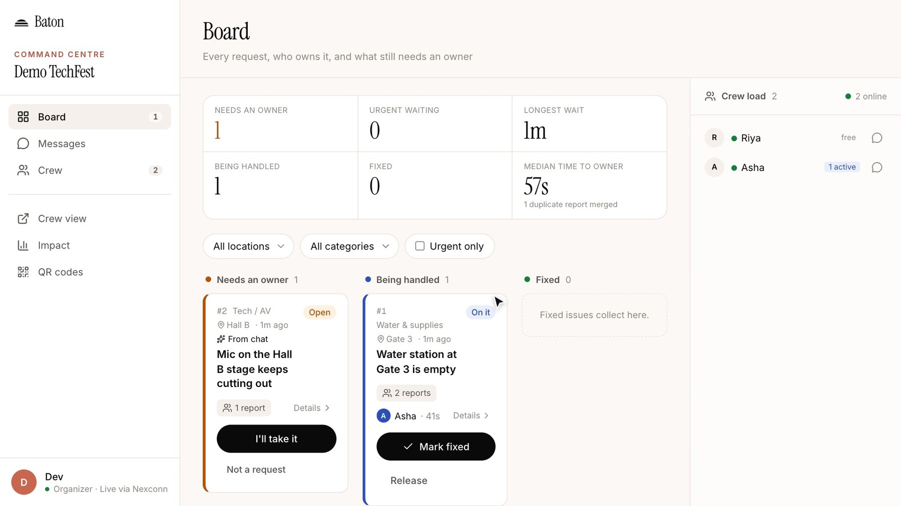
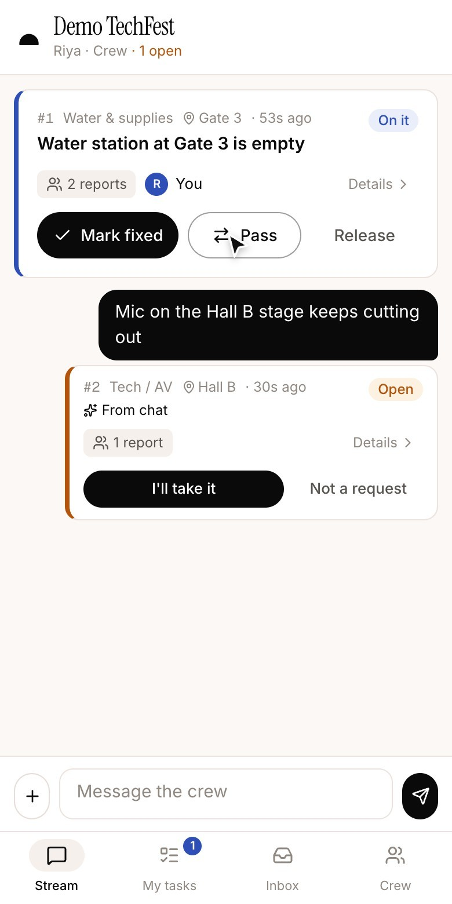
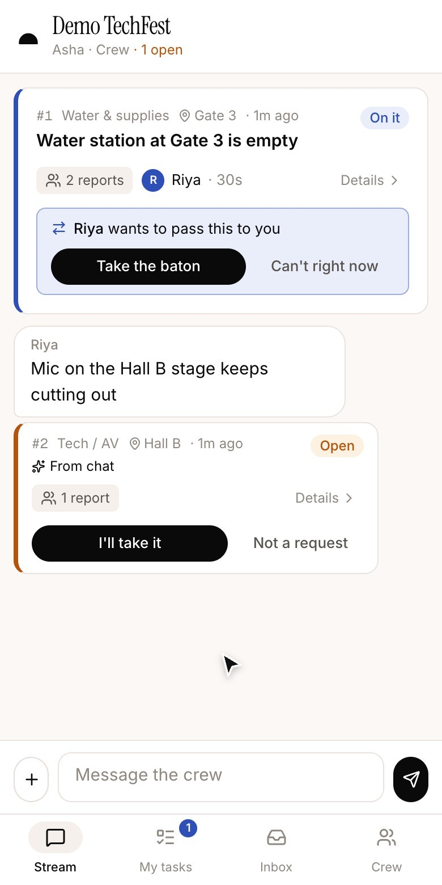
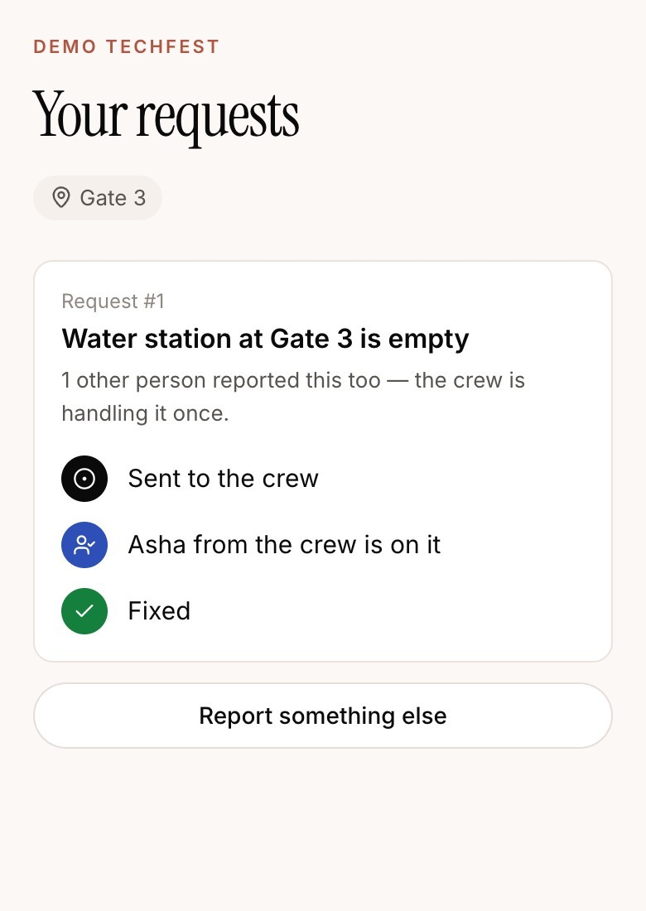
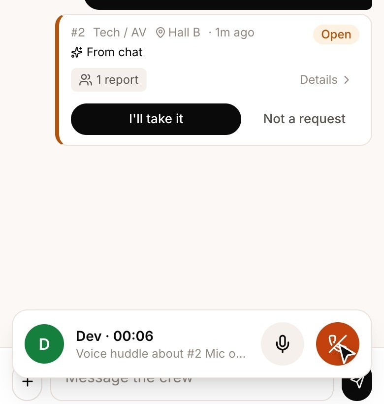
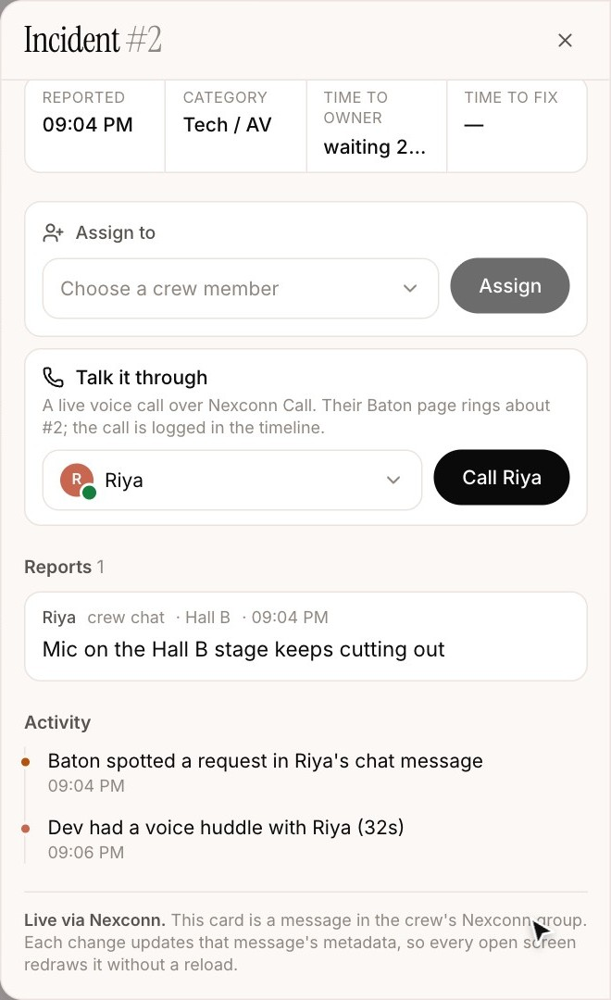
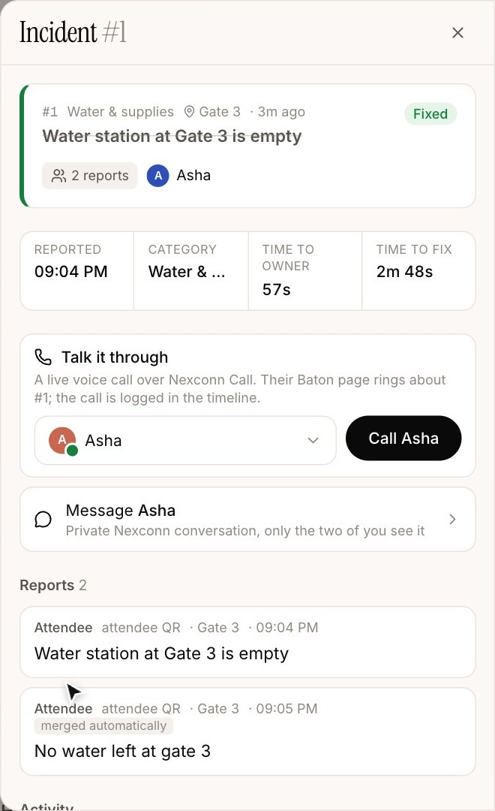

Baton is a real-time operations coordination platform for event teams. Attendees report problems by scanning a QR poster. Each report becomes an incident with exactly one owner, visible live on the organizer's board and on every volunteer's phone. Volunteers coordinate in a crew chat, hand work over with an explicit Baton Pass, and can start a voice call from the incident. The person who reported the problem sees who is on it and when it is fixed. Chat, live updates, private alerts and calls all run on Nexconn.

In an event group chat, everyone sees a request and nobody owns it. Duplicates pile up, handovers are silent, and the person who asked never hears back.
Each request gets one owner, chosen atomically. Duplicate reports merge. Handover only happens when the next person accepts. Every step is timed and logged.
Group and direct channels, custom message types, message metadata, targeted messages, message and presence webhooks, and 1:1 voice calls with the Call SDK.
Campus fests, hackathons and meetups are run by small crews of volunteers. On the day, requests come from everywhere: an attendee at a gate, a speaker backstage, another volunteer. Most of it lands in one busy chat group.
That group is good at spreading information. It is bad at getting work done, for four reasons:
The water station at Gate 3 runs dry. An attendee tells a volunteer; another posts in the crew group; a third attendee asks at the help desk. Three messages, one problem. Two volunteers each think the other is going. Twenty minutes later the station is still empty and the attendee has walked away.
This is an illustrative scenario built from common event operations, not measured data or user research. It is also the scenario used in the demo.
Ticketing and helpdesk tools solve ownership, but they are built for support teams at desks, not volunteers walking a venue on their phones. Crews will not install an app or create accounts for a one-day event, and attendees certainly will not.
We wanted the speed of a chat group with the accountability of a ticket queue: keep the chat, and add one rule on top of it. Every request has exactly one owner, and everyone can see who.
Sets up the event, prints QR codes, watches the board. Needs to see what is unowned and how long it has waited.
Work from their phones. Claim requests, talk in crew chat, hand over with a Baton Pass, call a lead when stuck.
Scan a poster at a location, describe the problem, and see the status update. No account, no install.
The organizer names the event and its locations (Gate 3, Main stage…). Baton creates a Nexconn crew group and prints a crew QR code plus one report poster per location.
Volunteers scan, type a name, and are in the crew chat. No password, no app store.
Scanning a location poster opens a short form. The report is sent and the attendee gets a private status thread.
A numbered, categorised card appears on the board and on every crew phone. A request typed in crew chat ("water's out at gate 3") becomes one too.
A second report about the same thing attaches to the existing incident. Matching uses deterministic rules: same location, same category, overlapping words, close in time. No AI.
One tap claims the incident. If several volunteers tap at once, exactly one wins; the others are told it is taken.
The owner offers the incident to a teammate with a note. They stay the owner until it is accepted, so the job is never ownerless.
A volunteer can start a voice call from the incident. When it is marked fixed, the reporter sees "Fixed" and the timeline keeps the whole story.



Organizer board (desktop), volunteer view (phone), attendee report page (phone), QR and poster pages. All are custom React screens; the Nexconn Chat UI kit is not used.
Baton uses the Nexconn Chat SDK (@nexconn/chat 26.2.1) with its own React interface, the Nexconn Server API from the backend, webhooks for messages and presence, and the Nexconn Call SDK (@nexconn/call) for voice. The App Secret stays on the server; browsers only receive short-lived access tokens.
| Baton feature | Nexconn capability | Implementation role | Evidence |
|---|---|---|---|
| Sign-in without accounts | Server API /v4/auth/access-token/issue | Server issues a token per volunteer and per anonymous attendee; client refetches on expiry | Live |
| Crew chat | Group channel (group-channel/create, join), Chat SDK GroupChannel.sendMessage, history query | One group per event; custom React chat UI; late joiners load history | Live check 8 |
| Incident cards in chat | Custom message types BTN:Incident, BTN:Status, BTN:Nudge | Registered with NCEngine.registerCustomMessages; the event bot posts cards via the Server API | Live check 7 |
| Live owner and status on every screen | Message metadata (message/metadata/set, onMessageMetadataUpdated) | Card state rides on the message; clients apply only newer versions | Live checks 12, 16 |
| Chat line → request | Webhook message:send | Signature and freshness checked, envelope deduplicated, rule-based detection, one incident per message | Live check 9 |
| Private Baton Pass alert | Group message with toUserIds | Only the recipient receives the offer and its push text | Live check 14 |
| Reporter updates | Direct channel message (Server API) | "Sent", "<name> is on it", "Fixed", each sent once per reporter | Live checks 13, 17, 26 |
| Crew online count | Webhook user:connection_status | Presence per member; client IP is dropped before storage | Live |
| Resilient connection | Connection status handler, NCEngine.connect | Shows reconnecting state, retries with a fresh token | Code |
| Voice huddle | Call SDK: startCall, acceptCall, enableMicrophone, endCall | 1:1 audio call started from an incident; duration logged on its timeline | Live checks 20–24 |
Baton's database is the source of truth for ownership. Nexconn carries every change to every screen: the server updates an incident, then writes the card's metadata and sends targeted messages; clients receive them over their open Chat SDK connection.
Baton would need its own WebSocket fleet, message history, offline delivery, push, presence and a WebRTC stack. Nexconn lets the project spend its time on ownership rules instead.



Some actions take several seconds on the live site because each makes several database round trips from the server region to the database region; co-locating them is the next fix. Calls are 1:1 audio only. Duplicate matching is rule-based and can miss reports worded very differently; sensitive categories are only suggested as merges, never merged automatically. No read receipts or typing indicators yet.
The buyer is the organizer or operations lead, who is accountable for how the event runs. The daily users are volunteers, and attendees are light, anonymous users. Because nobody but the organizer needs an account, adoption on the day costs the crew one QR scan.
These are hypotheses to be tested in pilots, not validated pricing.
Baton has no external users, pilots or customer feedback yet. All Nexconn users so far are our own development and demo identities. We are not reporting any numbers we do not have.
Everything in Baton was built during the challenge window (23 Oct – 22 Nov 2026). The first commit is a Next.js scaffold on 28 Oct 2026; there are 69 commits up to 12 Nov. There was no earlier version of the product.
Third-party building blocks: Next.js, React, Postgres with Drizzle ORM, Framer Motion, Radix UI and Lucide icons; the landing page hero layout is adapted from an Originkit block and the footer from Watermelon's footer-29. The demo narration is synthetic (TTS) and the two voices in the recorded call are synthetic test voices sent through a real Nexconn call.
| Project | Baton: the real-time operations coordination platform for event teams |
| Track | Workplace & Collaboration (team messaging, shift handover) |
| Live app | https://baton.priyanshnarang.in |
| Source code | https://github.com/priyansh-narang2308/baton |
| Demo video | {{VIDEO}} |
| Nexconn products | Chat SDK (custom UI), Server API, webhooks, Call SDK. docs.nexconn.ai |
| Try it | Open the live app, choose "Set up your event", then open the crew and report QR links on a phone. |